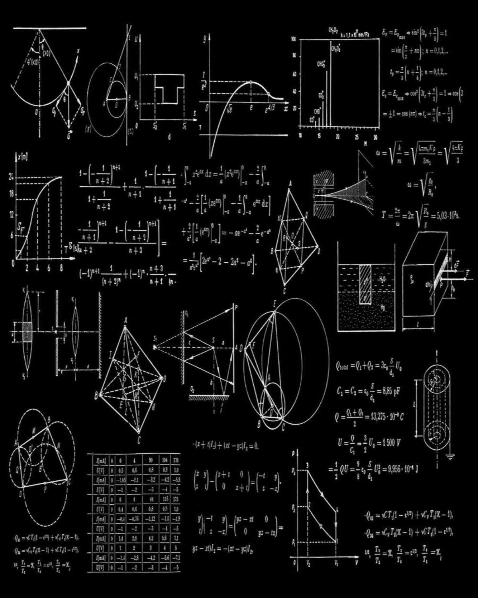
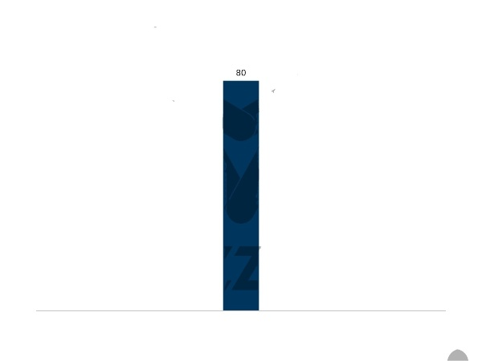
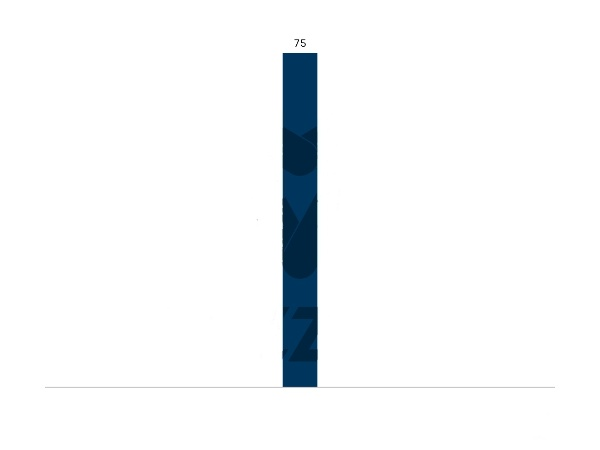
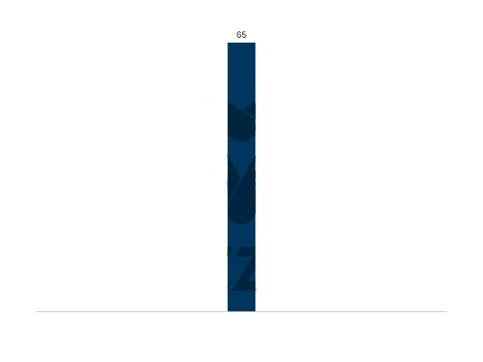

I firmly believe that life is meant for gaining experiences, and my hobbies reflect this belief.
Basketball
It's that captures the imagination and forces you to be relentless, ambitious, and optimistic. It forces you to cry, feel shitty, and then work through it all. It makes you accept the good, and the bad. It makes you love work, and it finally pays off you’ll love it even more. It’s an outlet, and a distraction but above all it’s life.
Music
Music is Medicine..music lowers stress..it helps reduce depression and it elevates your mood..Well i myself love listening to music coz MUSIC takes me to some other world far and far from world’s stresses..no tensions just ease and relaxation
Coding
It teaches you to take logical steps in developing solutions to complex problems. A child learns how to: break down complicated problems into simple steps. solve problems one step at a time rather than everything at once (which is how most real-word problems are solved

Maths
The real-life applications of Mathematics are endless. We are surrounded by numbers, equations and algorithms – especially in this age of data science, with huge data sets that can only be understood through statistical models and analysis. Maths gives us the ability to view the world in a way nothing else can!
skills
Even though i am a newbie in the world of tech still you can say that following are my so called skills

frankly speaking, HTML is very new to me even though I heard its name but still, I am not familiar with it so learning HTML in such a short time was a challenge the tutorial in YOUTUBE helped me a lot in this but still, I just knew I basic a lot to still learn.

CSS I never heard its name before but slowly after learning HTML I shift to CSS but due to time constraints, I could only able to learn the basics.

I found javascript as the most difficult among all of this as javascript is used to impart logic to the web page. I am a just a beginner in the world of javascript